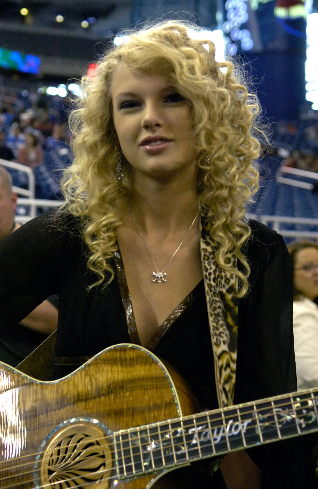
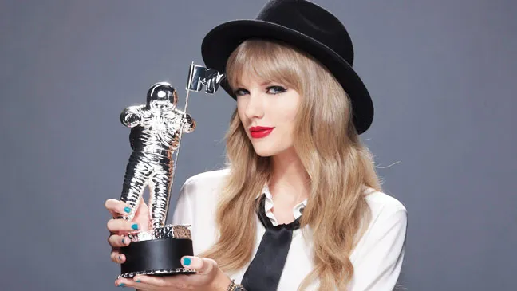
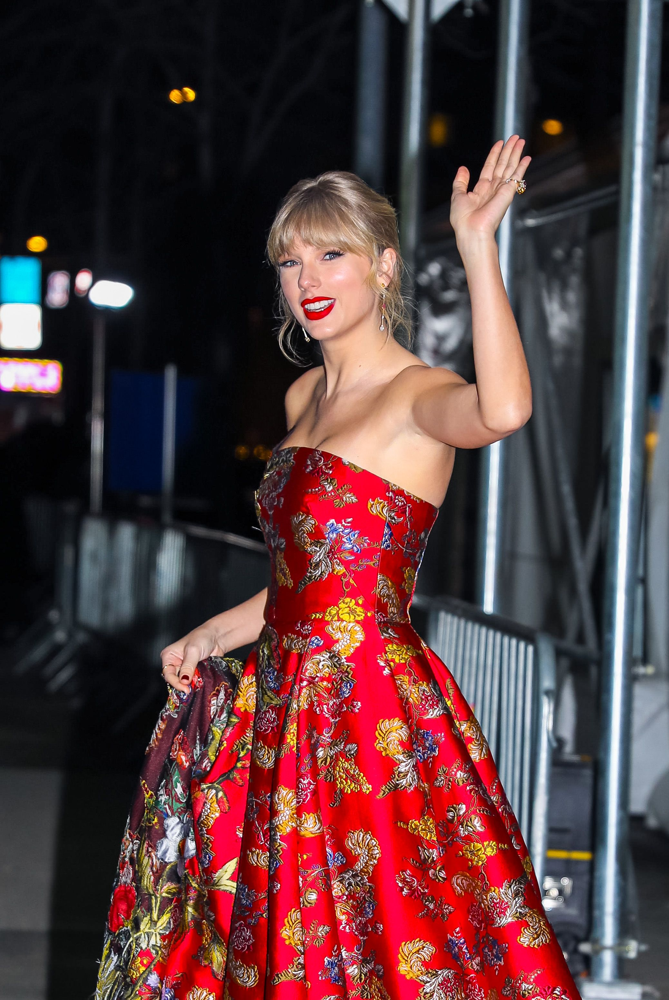
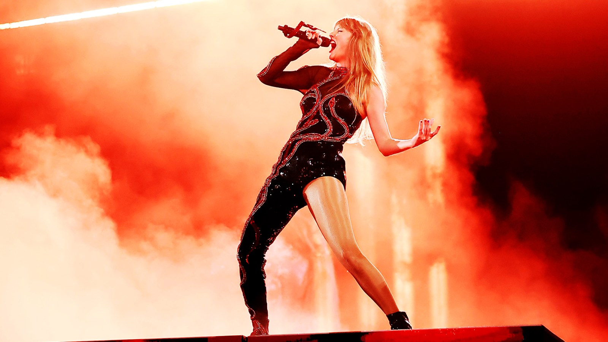

Taylor Swift
Singer-songwriter producer director businesswoman actress
Here's a time line of Taylor Swift's life:
-
December 13, 1989
Taylor Alison Swift was born in West Reading, Pennsylvania. She was raised Christian and attended preschool and kindergarten at a Montessori school run by the Bernardine Sisters of St. Francis before transferring to the Wyndcroft School. When her family moved to Wyomissing, Pennsylvania, she attended Wyomissing Area Junior/Senior High School. As a child, she performed in Berks Youth Theatre Academy productions and traveled regularly to New York City for vocal and acting lessons. Her early love for country music was influenced by Shania Twain, Patsy Cline, LeAnn Rimes, and the Dixie Chicks, and she spent weekends performing at local festivals and events. After watching a documentary about Faith Hill, she became determined to pursue a country-music career in Nashville, Tennessee.
-
2000
At 11, Swift traveled to Nashville with her mother to visit record labels and submit demo tapes of Dolly Parton and Dixie Chicks karaoke covers. She was rejected by all the labels, which led her to focus on songwriting. She started learning the guitar at 12 with the help of Ronnie Cremer, a computer repairman and local musician who also assisted Swift with writing an original song. In 2003, Swift and her parents started working with the talent manager Dan Dymtrow. With his help, Swift modeled for Abercrombie & Fitch and had an original song included on a Maybelline compilation CD. After performing original songs at an RCA Records showcase, 13-year-old Swift was given an artist development deal and began to travel regularly to Nashville with her mother. To help Swift break into the country music scene, her father transferred to Merrill Lynch's Nashville office when she was 14 years old, and the family relocated to Hendersonville, Tennessee. Swift attended Hendersonville High School before transferring to Aaron Academy after two years, which better accommodated her touring schedule through homeschooling. She graduated one year early.
-

2004-2006
At an industry showcase at Nashville's Bluebird Cafe in 2005, Swift caught the attention of Scott Borchetta, a DreamWorks Records executive who was preparing to form an independent record label, Big Machine Records. She had first met Borchetta in 2004. She was one of Big Machine's first signings, and her father purchased a three-percent stake in the company for an estimated $120,000. She began working on her eponymous debut album with Nathan Chapman. Swift wrote or co-wrote all album tracks, and co-writers included Rose, Robert Ellis Orrall, Brian Maher, and Angelo Petraglia.[41] Released in October 2006, Taylor Swift peaked at number five on the US Billboard 200, on which it spent 157 weeks—the longest stay on the chart by any release in the US in the 2000s decade. Swift became the first female country music artist to write or co-write every track on a US platinum-certified debut album.
-
2007
Swift was one of the recipients of the Nashville Songwriters Association's Songwriter/Artist of the Year in 2007, becoming the youngest person given the title. She also won the Country Music Association's Horizon Award for Best New Artist, the Academy of Country Music Awards' Top New Female Vocalist, and the American Music Awards' Favorite Country Female Artist honor. She was also nominated for Best New Artist at the 50th Annual Grammy Awards.In 2008, she opened for Rascal Flatts again and briefly dated the singer Joe Jonas.
- Swift was one of the recipients of the Nashville Songwriters Association's Songwriter/Artist of the Year in 2007, becoming the youngest person given the title. She also won the Country Music Association's Horizon Award for Best New Artist, the Academy of Country Music Awards' Top New Female Vocalist, and the American Music Awards' Favorite Country Female Artist honor. She was also nominated for Best New Artist at the 50th Annual Grammy Awards.In 2008, she opened for Rascal Flatts again and briefly dated the singer Joe Jonas. -
2008-2010
Swift's second studio album, Fearless, was released in November 2008 in North America, and in March 2009 in other markets. On the Billboard 200, Fearless spent 11 weeks at number one, becoming Swift's first chart topper and the longest-running number-one female country album. It was the best-selling album of 2009 in the US. Its lead single, "Love Story", was her first number one in Australia and the first country song to top Billboard's Pop Songs chart, and its third single, "You Belong with Me", was the first country song to top Billboard's all-genre Radio Songs chart.Three other singles were released in 2008–2010: "White Horse", "Fifteen", and "Fearless". All five singles were Hot Country Songs top-10 entries, with "Love Story" and "You Belong with Me" topping the chart. In 2009, Swift toured as an opening act for Keith Urban and embarked on her first headlining tour, the Fearless Tour.
-

2010-2012
Swift's third studio album, Speak Now, was released in October 2010. Written solely by Swift, the album debuted the Billboard 200 with over one million US copies sold first week and became the fastest-selling digital album by a female artist. Speak Now was supported by six singles: "Mine", "Back to December", "Mean", "The Story of Us", "Sparks Fly", and "Ours". "Mine" peaked at number three and was the highest-charting single on the Billboard Hot 100, the first three singles reached the top 10 in Canada, and the last two reached number one on Hot Country Songs. Swift promoted Speak Now with the Speak Now World Tour from February 2011 to March 2012 and the live album Speak Now World Tour.
-
2012-2014
At the 54th Annual Grammy Awards in 2012, Swift performed "Mean", which won Best Country Song and Best Country Solo Performance. She was named Songwriter/Artist of the Year by the Nashville Songwriters Association (2010 and 2011), Woman of the Year by Billboard (2011), and Entertainer of the Year by the Academy of Country Music (2011 and 2012) and the Country Music Association in 2011. At the American Music Awards of 2011, Swift won Artist of the Year and Favorite Country Album. Rolling Stone named Speak Now on its list of "50 Best Female Albums of All Time" (2012). Swift in a red marching-band outfit holding a mic Swift on the Red Tour in 2013.
Red and its single "Begin Again" received three nominations at the 56th Annual Grammy Awards (2014). Swift received American Music Awards for Best Female Country Artist in 2012, Artist of the Year in 2013, and the Nashville Songwriters Association's Songwriter/Artist Award for the fifth and sixth consecutive years. At the 2014 Country Music Association Awards, Swift was honored with the Pinnacle Award, making her the second recipient in history after Garth Brooks. The Red Tour ran from March 2013 to June 2014 and became the highest-grossing country tour upon completion.
-
2014
In March 2014, Swift began living in New York City, which she credited as a creative influence on her fifth studio album, 1989. She described 1989 as her first "official pop album" and produced it with Jack Antonoff, Max Martin, Shellback, Imogen Heap, Ryan Tedder, and Ali Payami.[130] Released in October 2014, the album opened atop the Billboard 200 with 1.28 million copies sold. Its singles "Shake It Off", "Blank Space", and "Bad Blood" reached number one in Australia, Canada, and the US, with the first two making Swift the first woman to replace herself at the Hot 100 top spot. Other singles include "Style", "Wildest Dreams", "Out of the Woods", and "New Romantics". The 1989 World Tour (2015) was the highest-grossing tour of the year with $250 million in total revenue.
-
 2015-2016
2015-2016
Swift dated the DJ Calvin Harris from March 2015 to June 2016. They co-wrote the song "This Is What You Came For", featuring vocals from Rihanna; Swift was initially credited under the pseudonym Nils Sjöberg. She recorded "I Don't Wanna Live Forever" with Zayn Malik for the soundtrack to Fifty Shades Darker (2017) and won a Country Music Association Award for Song of the Year with "Better Man", which she wrote for the band Little Big Town. In April 2016, Kanye West released the single "Famous", in which he references Swift in the line, "I made that bitch famous." Swift criticized West and said she never consented to the lyric, but West claimed that he had received her approval and his then-wife Kim Kardashian released video clips of Swift and West discussing the song amicably over the phone. The controversy made Swift a subject of an online "cancel" movement.[152] In late 2016, after briefly dating Tom Hiddleston, Swift began a six-year relationship with Joe Alwyn and retreated herself from the public spotlight.
-
2017
In August 2017, Swift successfully countersued David Mueller, a former radio jockey for KYGO-FM, who sued her for damages from loss of employment. Four years earlier, she informed Mueller's bosses that he had sexually assaulted her by groping her at an event. The public controversies influenced Swift's sixth studio album, Reputation, which explored the impact of her fame and musically incorporated electropop with urban styles of hip hop and R&B. Released in November 2017, Reputation opened atop the Billboard 200 with 1.21 million US sales and topped the charts in the UK, Australia, and Canada. The album's lead single, "Look What You Made Me Do", was Swift's first UK number-one single and topped charts in Australia, Ireland, New Zealand, and the US. Its singles "...Ready for It?", "End Game", and "Delicate" were released to pop radio. Reputation was nominated for a Grammy Award for Best Pop Vocal Album.
-
2018-2021
In November 2018, Swift signed a new deal with Universal Music Group, which promoted her subsequent albums under Republic Records' imprint. The contract included a provision for Swift to maintain ownership of her masters. In addition, in the event that Universal sold any part of its stake in Spotify, it agreed to distribute a non-recoupable portion of the proceeds among its artists.
Swift's first album with Republic Records, Lover, was released in August 2019. She produced the album with Antonoff, Louis Bell, Frank Dukes, and Joel Little. Lover peaked atop the charts of such territories as Australia, Canada, Ireland, Mexico, Norway, Sweden, the UK, and the US. The album spawned five singles: "Me!", "You Need to Calm Down", "Lover", "The Man", and "Cruel Summer"; the first two singles peaked at number two on the Billboard Hot 100, and the lattermost single became a resurgent success in 2023, reaching number one. Lover was 2019's best-selling album in the US and best-selling album by a solo artist worldwide. The album and its singles earned three nominations at the 62nd Annual Grammy Awards in 2020. At the 2019 MTV Video Music Awards, Swift won three awards including Video of the Year for "You Need to Calm Down", becoming the first female and second artist overall to win the category for a self-directed video.
According to Billboard, Swift was the highest-paid musician in the US and highest-paid solo musician worldwide of 2020. Folklore made Swift the first woman to win the Grammy Award for Album of the Year three times, winning the category at the 63rd Annual Grammy Awards (2021). At the American Music Awards, Swift won three awards including Artist of the Year for a third record time (2020) and Favorite Pop/Rock Female Artist and Favorite Pop/Rock Album (2021). Swift played Bombalurina in the film adaptation of Andrew Lloyd Webber's musical Cats (2019), for which she co-wrote and recorded the Golden Globe-nominated original song "Beautiful Ghosts". The documentary Miss Americana, which chronicled parts of Swift's life and career, premiered at the 2020 Sundance Film Festival.
-
 2021-2023
2021-2023
Swift's re-recordings of her first six studio albums began with Fearless (Taylor's Version) and Red (Taylor's Version), which were released in April and November 2021. Both peaked atop the Billboard 200, and the former was the first re-recorded album to do so. Fearless (Taylor's Version) was preceded by "Love Story (Taylor's Version)", which made Swift the second artist after Dolly Parton to have both the original and re-recorded versions of a song reach number one on Hot Country Songs. Red (Taylor's Version) was supported by "All Too Well (10 Minute Version)", which became the longest song in history to top the Hot 100.
Swift's tenth studio album, Midnights, was released in October 2022. The album incorporates a restrained electropop[198] and synth-pop sound with elements of hip hop, R&B, and electronica.[197][200] In the US, Midnights was her fifth to open atop the Billboard 200 with first-week sales of over one million copies, and its tracks, led by the single "Anti-Hero", made Swift the first artist to monopolize the top 10 of the Hot 100. Globally, the album broke the record for the most single-day streams and most single-week streams on Spotify and peaked atop the charts of at least 14 countries. The album's two further singles, "Lavender Haze" and "Karma", both peaked at number two on the Billboard Hot 100.
According to Billboard, Swift was the top-earning solo artist in the US and the top-earning musician worldwide of 2021. She won six American Music Awards including Artist of the Year in 2022. At the MTV Video Music Awards, Swift won her third and fourth trophies for Video of the Year with All Too Well: The Short Film, her self-directed short film that accompanies "All Too Well (10 Minute Version)", in 2022[207] and "Anti-Hero" in 2023. At the Grammy Awards, All Too Well: The Short Film won Best Music Video at the 65th annual ceremony (2023) and Midnights won Best Pop Vocal Album and Swift's record fourth Album of the Year at the 66th annual ceremony. Swift became the artist with the most Album of the Year wins in Grammy history.
Swift's next two re-recorded albums, Speak Now (Taylor's Version) and 1989 (Taylor's Version), were released in July and October 2023. The former made Swift the woman with the most number-one albums (12) in Billboard 200 history, surpassing Barbra Streisand, and the latter was her sixth album to sell one million copies in a single week in the US, claiming her career's largest album sales week. 1989 (Taylor's Version)'s single "Is It Over Now?" peaked at number one on the Billboard Hot 100. Swift featured on Big Red Machine's "Renegade" and "Birch" (2021), Haim's "Gasoline" (2021), Ed Sheeran's "The Joker and the Queen" (2022), and the National's "The Alcott" (2023). For the soundtrack of Where the Crawdads Sing (2022), she wrote and recorded "Carolina", which received nominations for Best Original Song at the Golden Globes and Best Song Written for Visual Media at the Grammy Awards.
Swift was 2023's most streamed artist on Spotify, Apple Music, and Amazon Music; and the first act to place number one on the year-end Billboard top artists list in three different decades (2009, 2015 and 2023).[222] She had five out of the 10 best-selling albums of 2023 in the US, a record since Luminate began tracking US music sales in 1991.[223] Besides music, Swift had a supporting role in the period comedy film Amsterdam (2022) and began writing an original script for her directorial feature film debut with Searchlight Pictures.
-

2023-present
In March 2023, Swift embarked on the Eras Tour, a retrospective tour covering all her studio albums. Media outlets extensively covered the tour's cultural and economic impact, and its US leg broke the record for the most tickets sold in a day. Ticketmaster received public and political criticisms for mishandling the tour's ticket sales. The Eras Tour became the highest-grossing tour in history, collecting over $1 billion. Its concert film, released to theaters worldwide on October 13, 2023, grossed over $250 million to become the highest-grossing concert film, and was nominated for the Golden Globe Award for Cinematic and Box Office Achievement. Swift's music releases, touring, and related activities culminated in an unprecedented height of popularity post-pandemic. Music Business Worldwide remarked that she entered a "new stratosphere of global career success" in 2023.
Your feelings so are important to write down, to capture, and to remember because today you're heartbroken, but tomorrow you'll be in love again. --Taylor Swift